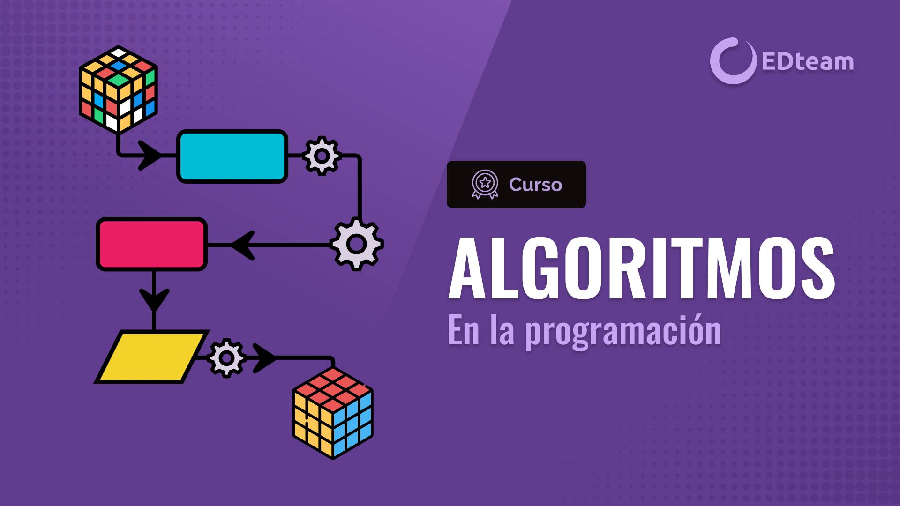

PROGRAMACIÓN DE SOFTWARE
El desarrollo de software se refiere a un conjunto de actividades informáticas dedicadas al proceso de creación, diseño, despliegue y compatibilidad de software. El software en sí es el conjunto de instrucciones o programas que le dicen a una computadora qué hacer.
ALGORITMOS

Un algoritmo de programación es un conjunto de instrucciones lógicas y bien definidas que se utilizan para resolver un problema específico, y que estas instrucciones se expresan en un lenguaje que la computadora pueda entender y ejecutar. Los algoritmos son la base de la programación y permiten a los desarrolladores diseñar programas que puedan realizar tareas complejas de manera sistemática y eficiente.
PHP
PHP es un lenguaje de programación de código abierto utilizado principalmente para crear sitios web dinámicos e interactivos. Este lenguaje fue diseñado para ser integrado en HTML y funciona en el lado del servidor, lo que significa que el código PHP se ejecuta en el servidor web antes de que se envíe la página al navegador del usuario. Se menciona que PHP es utilizado por muchos sitios web populares y cuenta con una amplia comunidad de desarrolladores que contribuyen al desarrollo de bibliotecas, frameworks y herramientas para su uso.
JavaScript
JavaScript es un lenguaje de programación interpretado popular utilizado para desarrollar aplicaciones web y de escritorio. Fue creado por Brendan Eich en 1995 y se usa para agregar interactividad a las páginas web y aplicaciones, incluyendo animaciones y acceso a bases de datos externas y API. También se utiliza para programar aplicaciones de escritorio, servidores web y dispositivos móviles. Los navegadores web modernos tienen un motor JavaScript incorporado, lo que permite a los desarrolladores crear aplicaciones web dinámicas e interactivas.
Base de datos
Las bases de datos son esenciales para el almacenamiento, acceso y manipulación de información estructurada de manera eficiente. Las bases de datos programáticas se utilizan para almacenar información de manera estructurada y las aplicaciones pueden realizar acciones como buscar, agregar, cambiar o eliminar información de la base de datos. Las bases de datos son fundamentales en muchas aplicaciones modernas, desde sitios web y aplicaciones móviles hasta sistemas comerciales y científicos, ya que permiten almacenar y acceder a grandes cantidades de información de manera organizada y eficiente.